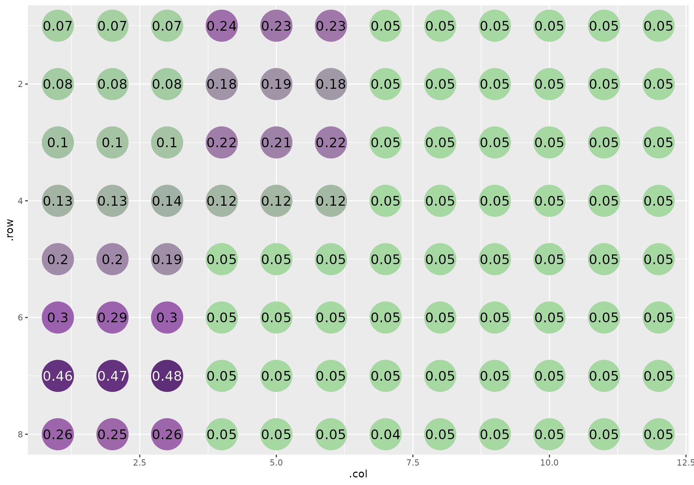
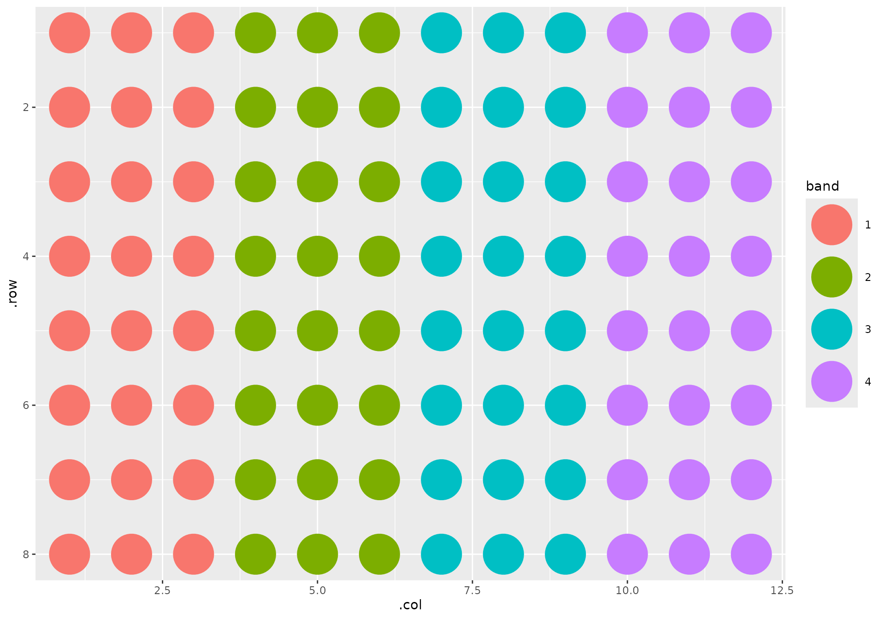
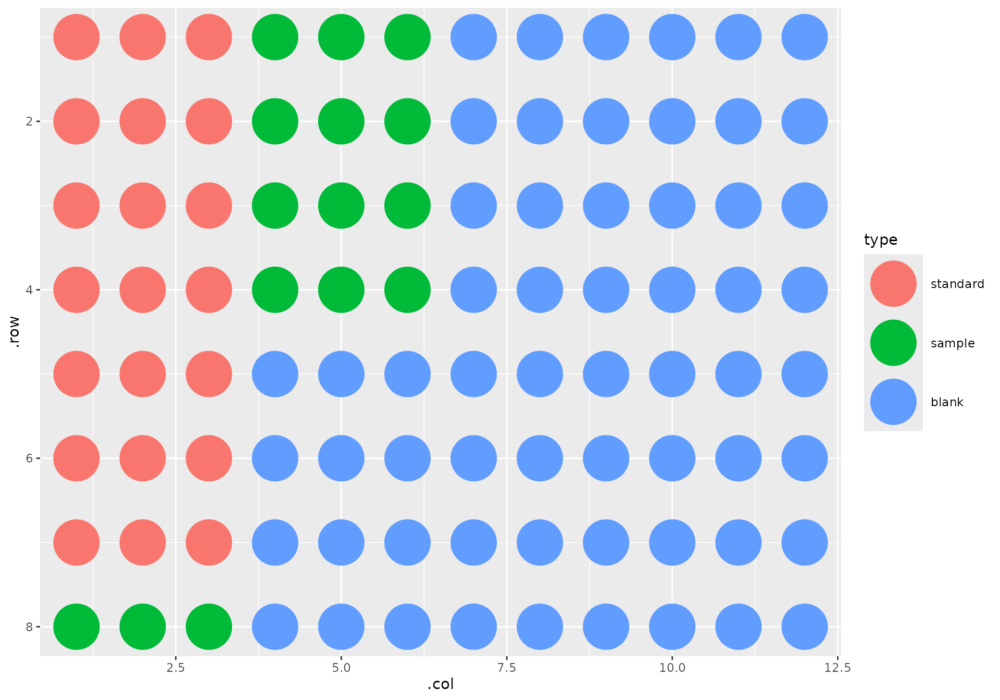

Quantifying protein with qp
quantifying-protein-with-qp.RmdIntroduction
The Micro BCA assay and its analysis is easy and straightforward. With most lab work, though, the analysis is typically repetitive. We can analyze these data programmatically to speed up and automate analysis, remove human error, and get reproducibility for free along the way.
qp intends to be no-fuss enough where it analyze routine
runs and flexible enough to make analyzing hairier ones simple enough.
In this vignette, I’ll start with a straightforward data set and move to
a more challenging one to show you the two different approaches to
analyzing protein quantification data using qp.
Routine analysis
The standard qp workflow is based off this
protocol. Provided the protocol is followed, relatively few parameters
need to be changed from their default.
The easiest - and most common - way to read in your data is by
providing a path to your SPECTRAmax file output. These .txt
files are some of the most…creatively…formatted files I’ve come
across.
f <- system.file("extdata", "absorbances.txt", package = "qp")
readLines(f)
#> [1] "##BLOCKS= 2 "
#> [2] "Plate:\tPlate#1\t1.3\tPlateFormat\tEndpoint\tAbsorbance\tRaw\tFALSE\t1\t\t\t\t\t\t1\t562\t1\t12\t96\t1\t8\tNone\t"
#> [3] "\tTemperature(\xa1C)\t1\t2\t3\t4\t5\t6\t7\t8\t9\t10\t11\t12\t\t"
#> [4] "\t37.00\t0.0686\t0.0717\t0.0698\t0.2415\t0.228\t0.2273\t0.0475\t0.0459\t0.0485\t0.0487\t0.0474\t0.0464\t\t"
#> [5] "\t\t0.0825\t0.0832\t0.0835\t0.183\t0.1856\t0.1753\t0.0487\t0.0464\t0.048\t0.0465\t0.0468\t0.047\t\t"
#> [6] "\t\t0.1023\t0.1004\t0.1017\t0.2175\t0.2137\t0.2168\t0.0475\t0.0471\t0.0475\t0.047\t0.0474\t0.0472\t\t"
#> [7] "\t\t0.1322\t0.1324\t0.1371\t0.1241\t0.1248\t0.1213\t0.0482\t0.0475\t0.0476\t0.0477\t0.0474\t0.0479\t\t"
#> [8] "\t\t0.1955\t0.199\t0.1938\t0.0478\t0.0455\t0.0508\t0.046\t0.0465\t0.0479\t0.0512\t0.0477\t0.0465\t\t"
#> [9] "\t\t0.2963\t0.2878\t0.2974\t0.046\t0.0467\t0.0462\t0.0465\t0.0477\t0.0455\t0.0456\t0.0467\t0.046\t\t"
#> [10] "\t\t0.4599\t0.4662\t0.4779\t0.0472\t0.0455\t0.0464\t0.0473\t0.0464\t0.0493\t0.0451\t0.0463\t0.0466\t\t"
#> [11] "\t\t0.2617\t0.2524\t0.2584\t0.0461\t0.0463\t0.0469\t0.0448\t0.0465\t0.0464\t0.0477\t0.0472\t0.0457\t\t"
#> [12] "\t\t"
#> [13] "~End"
#> [14] "Original Filename: Untitled Date Last Saved: Unsaved"
#> [15] "Copyright \xa9 2003 Molecular Devices. All rights reserved."Fortunately, I’ve developed a little package mop that
reads in lab data like these. This is used in the qp
function when you provide it a character string.
Typically when you perform these experiments, you will know how it was laid out. In these data I’m providing, though, I’ll need to show you how it’s laid out so that you can follow along why I set some parameters the way I do.
This is how the plate looks:

The samples are laid out in triplicate, horizontally arranged replicates in vertical bands that wrap to the next three columns once it hits the edge of the plate.

Furthermore, I have my seven standards in the top left corner of the plate, in ascending concentrations as they flow down the first column. The samples follow. The rest of the wells are empty:

Since we followed the standard protocol, and since I told you replicates were arranged horizontally, analysis is a breeze:
out <- qp(f, replicate_orientation = "h")
#> Please wait. This will take ~10 seconds.We can plot our standards and samples simply, using
qp_plot_standards:
qp_plot_standards(out)
And we can get a summary of the concentrations using
qp_summarize:
summary <- qp_summarize(out)
summary
#> # A tibble: 12 × 3
#> name sample_type .mean_pred_conc
#> <chr> <fct> <dbl>
#> 1 Standard 1 standard -0.00623
#> 2 Standard 2 standard 0.102
#> 3 Standard 3 standard 0.258
#> 4 Standard 4 standard 0.520
#> 5 Standard 5 standard 1.08
#> 6 Standard 6 standard 2.06
#> 7 Standard 7 standard 3.76
#> 8 1 unknown 1.71
#> 9 2 unknown 1.39
#> 10 3 unknown 0.989
#> 11 4 unknown 1.30
#> 12 5 unknown 0.451We can also calculate dilutions from this summary. By default, it will use the lowest concentration of the samples and a final volume of 15uL:
summary |> qp_dilute()
#> `target_conc` is missing, using lowest sample concentration
#> # A tibble: 12 × 5
#> name sample_type .mean_pred_conc sample_to_add add_to
#> <chr> <fct> <dbl> <dbl> <dbl>
#> 1 Standard 1 standard -0.00623 -1088 1103
#> 2 Standard 2 standard 0.102 66.2 -51.2
#> 3 Standard 3 standard 0.258 26.2 -11.2
#> 4 Standard 4 standard 0.520 13.0 1.98
#> 5 Standard 5 standard 1.08 6.24 8.76
#> 6 Standard 6 standard 2.06 3.28 11.7
#> 7 Standard 7 standard 3.76 1.8 13.2
#> 8 1 unknown 1.71 3.97 11.0
#> 9 2 unknown 1.39 4.85 10.1
#> 10 3 unknown 0.989 6.85 8.15
#> 11 4 unknown 1.30 5.23 9.77
#> 12 5 unknown 0.451 15 0